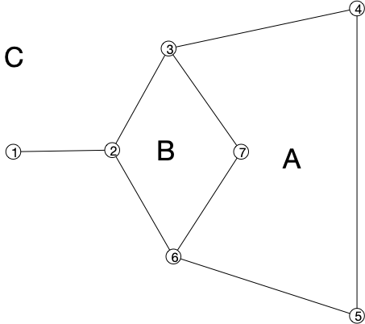

Propriétés
Comptage des faces
Définition
Un ensemble $A \subseteq \mathcal{R}^2$ est connexe si pour tous $x, y \in A$ il existe une courbe $\gamma$ telle que :
- $\gamma(0) = x$, $\gamma(1) = y$
- $\gamma([0, 1]) \subseteq A$
Définition
Les faces d'un dessin planaire $(f, g)$ d'un graphe connexe $G=(V, E)$ sont les régions connexes de $\mathcal{R}^2 \backslash (\cup_{xy \in E}g(xy)([0, 1]))$.
Les faces sont bien ce que l'on pense qu'elles sont, si on n'oublie pas la face extérieur (infinie). Le graphe suivant à donc 3 faces :

Proposition (formule d'Euler)
Soit $G = (V, E)$ un graphe et $(f, g)$ un de ses dessins planaires. Si $F$ est son nombre de faces, $n$ son nombre de sommets et $m$ son nombre d'arêtes, on a l'égalité :
preuve
preuve
TBD cours papier
La formule d'Euler montre que le nombre de faces ne dépend pas de son dessin ! On peut donc parler du nombre de faces d'un graphe planaire indépendamment de son dessin planaire. L'exemple ci-après montre deux dessins planaires différents de $K_4$, les faces sont différentes, mais leur nombre (3) est le même :

Degrés des graphes planaires
La formule d'Euler permet de borner le nombres d'arêtes d'un graphe planaire :
Proposition
Soit $G = (V, E)$ un graphe planaire à $n$ sommets et $m$ arêtes. On a l'inégalité :
Un graphe planaire a donc très peu d'arêtes, au pire 3 fois plus que de sommets. Ceci implique qu'il existe un sommet de petit degré :
Proposition
Soit $G = (V, E)$ un graphe planaire. Il existe un sommet $x$ de degré inférieur ou égal à 5.
preuve
preuve
Si tous les sommets avaient un degré strictement plus grand que 5 on aurait : $2\cdot m = \sum\delta(x) \geq 6 \cdot n$, donc $m\geq 3\cdot n$. Ceci est cependant impossible puisque $m \leq 3\cdot n - 6 < 3\cdot n$.
Triangulation
Le nombre maximum d'arêtes pour un graphe planaire est m = 3n-6 dans ce cas la, toutes les faces sont des triangles.
Donc trianguler une représentation planaire triangule toutes les autres, même si les faces sont différentes !
TBD comment trianguler : https://fr.wikipedia.org/wiki/Triangulation_d'un_polygone
Nombre minimum de croisements de graphes non planaires
Enfin, une dernière propriété sur les graphes nom planaires.
Définition
POur tout graphe $G$, on note $\text{cr}(G)$ le nombre minimum de croisements d'arêtes qu'un dessin de $G$ peut avoir.
Les graphes planaires sont bien sur les graphes $G$ tels que $\text{cr}(G) = 0$. Et $\text{cr}(K_5) = 1$ (il n'est pas planaire et on l'a dessiné avec uniquement 1 croisement d'arête). Pour chaque graphe, il faudrait pouvoir trouver tous ses dessins possibles et compter pour chacun le nombre de croisements, ce qui est impossible à faire en pratique.
Il existe cependant des bornes dépendant uniquement du nombre de sommets et d'arêtes. Par exemple :
Montrez que pour tout graphe $G$ à $n$ sommets et $m$ arêtes on a $\text{cr}(G)\geq m-3n+6$.
corrigé
corrigé
On sait que $m \leq 3n-6$ pur un graphe planaire. Tout graphe avec plus d'arêtes va donc avoir au moins 1 croisement par arête surnuméraire : on peut itérativement supprimer une arête qui possède un croisement (il en existe forcément une si $m-3n+6>0$).
Mais on peut faire bien mieux en utilisant la méthode probabiliste ! On a en effet la proposition suivante :
Proposition
Pour tout graphe $G = (V, E)$ à $n$ sommets et $m$ arêtes on a :
TBD exemple.
Si on peut prouver cette inégalité en utilisant la méthode probabiliste, il faut pouvoir associer à un graphe $G$ un autre graphe, $H$ aléatoire.
2.2 crossing lemma : https://www-sop.inria.fr/members/Frederic.Havet/Cours/proba-notes.pdf à mettre après Euler https://en.wikipedia.org/wiki/Crossing_number_inequality#Statement_and_history
Algorithmes
Reconnaissance
Par blocks (2-connexe maximals). puis reconnaissance de blocs
Dessin
TBD dessin avec 2-connexe https://perso.ens-lyon.fr/eric.thierry/Graphes2010/lucie-martinet.pdf
TBD triangulation d'une représentation fait triangulation de toutes les représentations. Si triangulé admet le nombre maximum d'arêtes m = 3n-6 https://facultyweb.kennesaw.edu/mlavrov/courses/graph-theory/lecture21.pdf et donc vrai partout.
TBD dessin sans courbure dans un triangle:
Coloration de graphes planaires
TBD pareil que colorier les faces.
TBD 3 colorable planaire np-complet : https://www.cs.cmu.edu/afs/cs/academic/class/15451-s04/www/Lectures/chapter23.pdf
- coloriable :
Nom de l'algorithme
algo
autre algo $x_1 \leftarrow 3$ fin
Théorème des 4 couleurs
TBD 6 par notre algo de coloration TBD 5 couleur : démonstration de Kempe.
Elle ne fonctionne pas pour 4 couleurs. Pourquoi ? TBD Une démo du théorème des 4 couleurs par Kempe : https://www.youtube.com/watch?v=adZZv4eEPs8 TBD théorème des 4 couleurs :
Algorithmes de coloration
- 6 coloration avec l'algo de coloration
- 5 coloration linéaire https://www.enseignement.polytechnique.fr/profs/informatique/Francois.Morain/INF431/X06/5col.pdf
- 4 coloration d'un graphe planaire 3 colorable (Kawarabayashi et Ozeki 2009) https://tgt.ynu.ac.jp/ozeki/2009KO2.pdf. Soit il sort une 4 coloration, soit il dit que le graphe n'est pas 3 colorable. Pourquoi n'est-ce pas en contradiction avec le fait que le problème est NP-complet ?
Variantes
TBD pays non connexes TBD colonies lunaires
Colorabilité et partage de secrets
TBD un sujet qui lie tout ce qu'on a fait jusqu'à maintenant.
https://fr.wikipedia.org/wiki/Preuve_à_divulgation_nulle_de_connaissance
Odds and ends
Nombreux problèmes NP-complets sont facile à les graphes planaires.
Propriétés
-
3 coloriable et problème de la galerie d'art : https://fr.wikipedia.org/wiki/Problème_de_la_galerie_d'art
-
Lemme de Sperner https://www.youtube.com/watch?v=cpIexccvYjI&list=PLdUzuimxVcC0QCFYP0Af3TNldswjL8_ep&index=18, on peut le démontrer avec la planarité : https://www.ams.jhu.edu/~abasu9/AMS_550-472-672/sperner.pdf. Attention, ce n'est pas de la coloration de graphes (pas de contrainte sur les voisins).
Facile pour les graphes planaires
TBD isomorphisme de graphe planaire